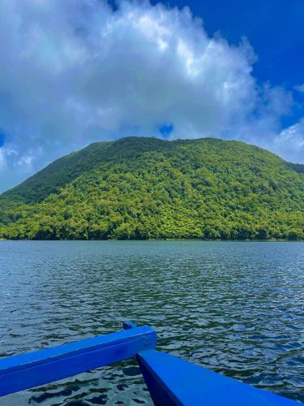
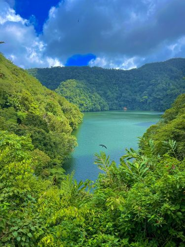
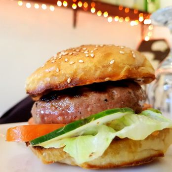

Welcome to the Sibulan Gallery, where the vibrant essence of this charming municipality comes to life through captivating imagery. Explore the picturesque landscapes, rich cultural heritage, and diverse attractions that make Sibulan a hidden gem in Negros Oriental.



Ready For Unforgettable Travel. Negros Oriental!
BRIEF HISTORY OF SIBULAN
Noting the wealth of springs in this area, the Spaniards named it ‘Land of Sibuls’ which meant land of numerous springs. Influence of time, as well as elements of change, got the name of this municipality modified to Sibulan, its present name. In 1838, this town became a Parish under secular order. In 1856, the parish was occupied by a regular church priest. Then, in 1910, Sibulan had its initial set of municipal government officials once it became a municipality. This was in accordance to Act No. 82 of the Philippine Commission dated January 31, 1910. Macario Literal was the first appointed municipal mayor.